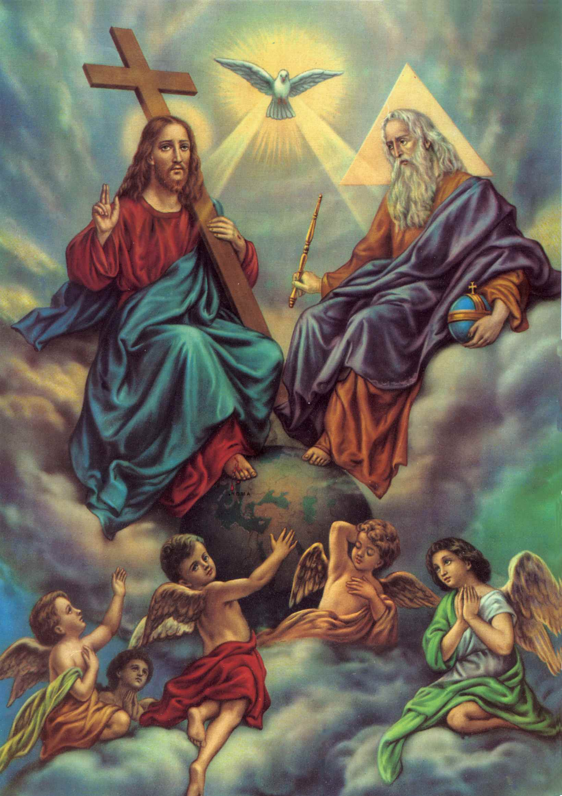

"SANTÍSSIMO MISTÉRIO"


"AQUI REPRODUZIMOS OS PRINCIPAIS DESTAQUES DA ADMIRÁVEL OBRA - "A TRINDADE" - ESCRITA POR SANTO AGOSTINHO, QUE OFERECE CONHECIMENTOS DA SUA ADMIRÁVEL SABEDORIA, QUE BUSCAM ILUMINAR O ENTENDIMENTO MESMO DE MODO SUPERFICIAL, SOBRE O BELO, PROFUNDO E INACCESSÍVEL MISTÉRIO DA SANTÍSSIMA TRINDADE".
=ÍNDICE=
 - PRELÚDIO
- PRELÚDIO
 - DERRADEIRAS PALAVRAS + CONVITE + E-MAIL
- DERRADEIRAS PALAVRAS + CONVITE + E-MAIL
 -
-  -
-